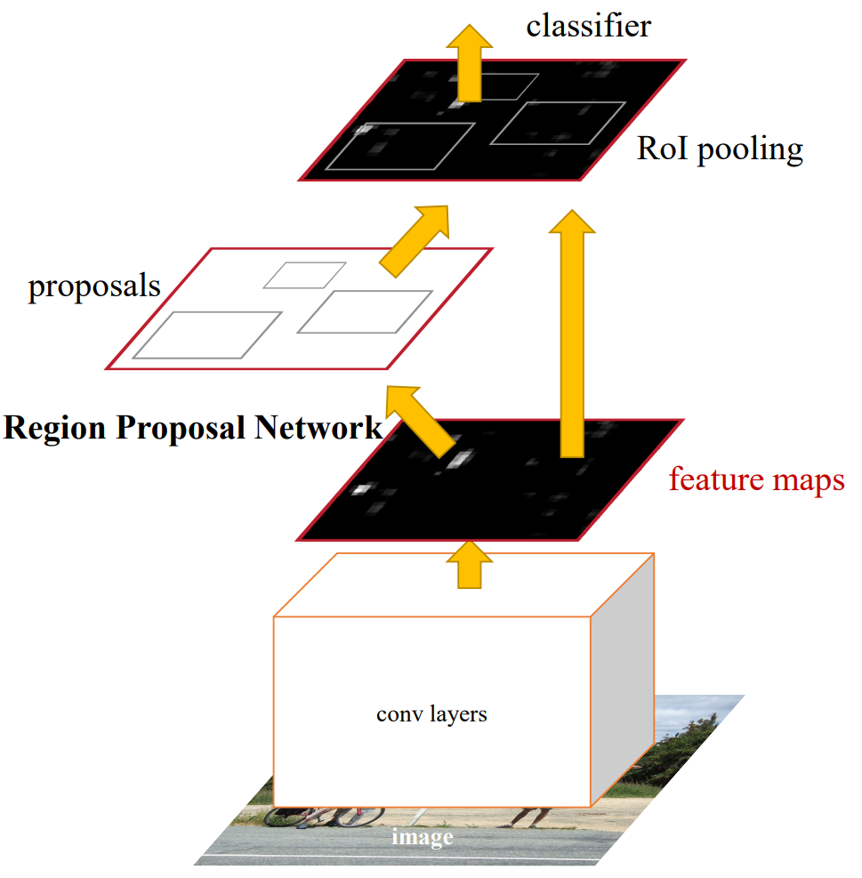
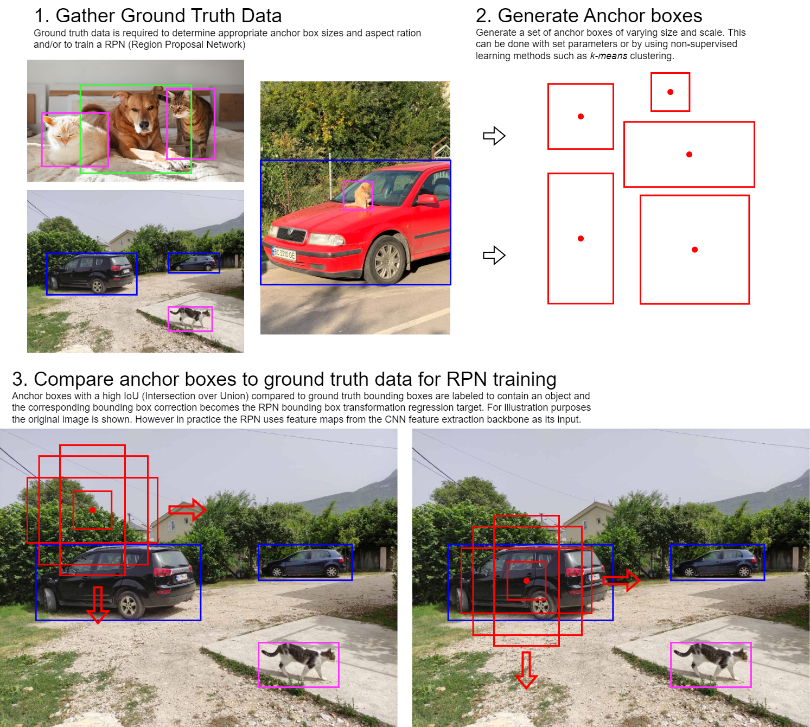
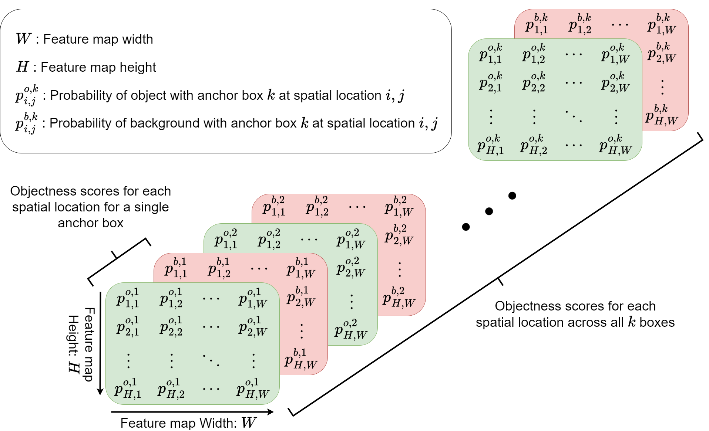
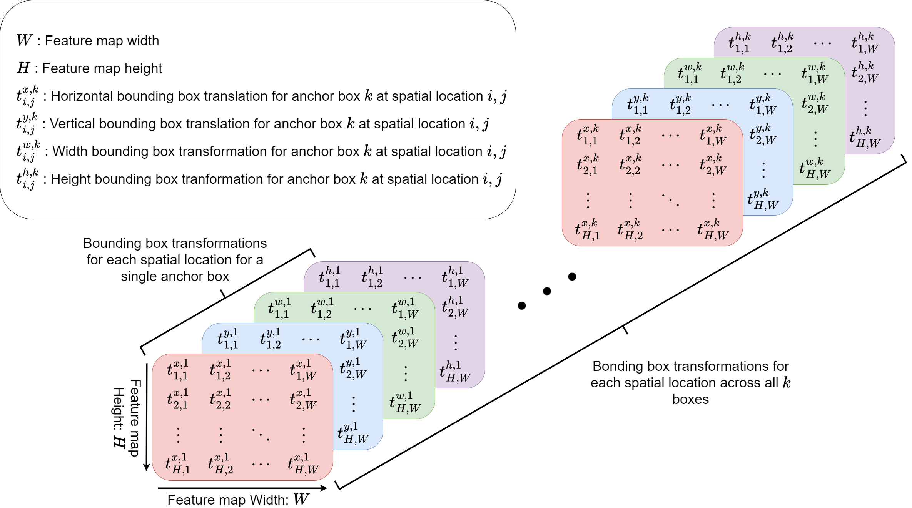
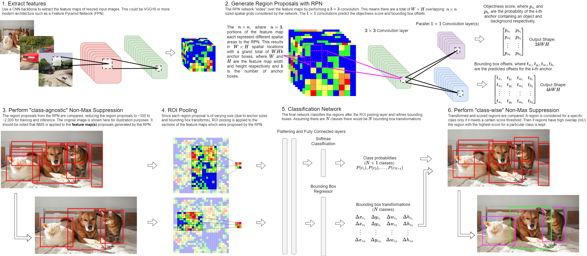
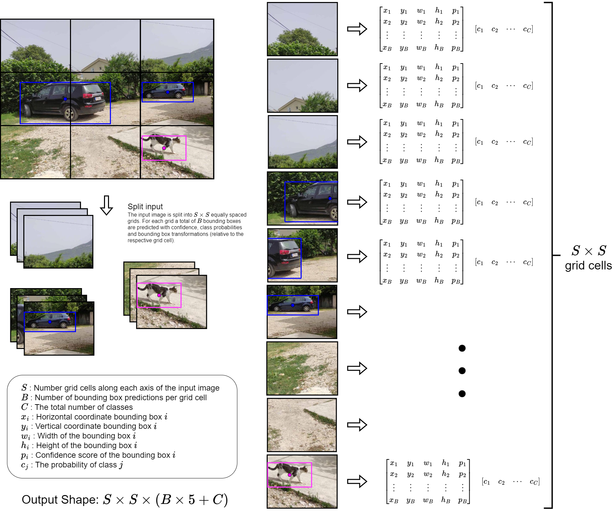
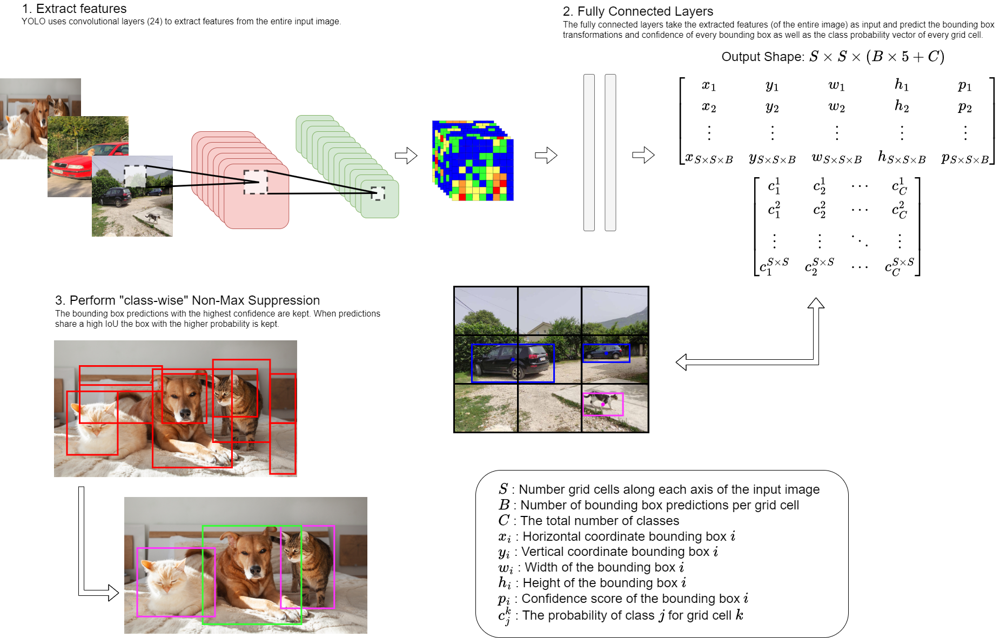

DSAN 6500: Week 06 - Advanced Object Detection
Video: Advanced Object Detection - Part 1
The following is a recording on this topic, I hope you find it useful!
Feel free to watch at 1.5x or 2x speed.
Note: If you find something missing or incorrect in the recording, then please let me know!
Video: Advanced Object Detection - Part 2
The following is a recording on this topic, I hope you find it useful!
Feel free to watch at 1.5x or 2x speed.
Note: If you find something missing or incorrect in the recording, then please let me know!
Faster R-CNN Overview
- Faster R-CNN (circa 2016) is an improved version of Fast R-CNN
- Like its predecessors, it is a two-stage object detection model
- Introduces a Region Proposal Network (RPN)
- Significantly reduced detection time compared to predecessors
- Eliminates the need for external region proposal methods like Selective Search in Fast R-CNN

Faster R-CNN Architecture
Comprised of three key components:
- Backbone: Feature extraction network
- A CNN (e.g., ResNet50, VGG16) extracts feature maps from the input image.
- Region Proposal Network (RPN): Proposes potential object locations
- Proposes potential object locations in the image
- Uses anchors (predefined boxes of different scales/aspect ratios)
- RoI Pooling & Classification Head: Classifies proposed regions and refines bounding boxes
- Top K proposals are selected using Non-Maximum Suppression (NMS)
- Proposal are resized to a fixed size using RoI Pooling (or RoI Align in later versions)
- Classifies proposed regions and refines bounding boxes.
Anchor Boxes

Faster R-CNN Backbone
- The backbone is a CNN that extracts feature maps from the input image
- Extracted features are shared between the RPN and the RoI classification head
- Original Faster R-CNN paper uses ZFNet and VGG16 as the backbone
- Modern implementations use the following CNNs:
- ResNet and its variants - most popular
- Feature Pyramid Networks (FPN)
- EfficientNet
- Modern implementations use the following CNNs:
Faster R-CNN Region Proposal Network (RPN)
- A small CNN Network slides over the feature map (typically 3 \times 3) with a stride of 1 pixel, followed by parallel 1 \times 1 convolutions.
- 3 \times 3 sliding window has an effective receptive field of 228 pixels at the original image size using VGG16
- At each position, anchors (predefined boxes of d ifferent scales/aspect ratios) are considered if an object is present and what the bounding box offsets are.
- The network predicts:
- Object Score: Whether each anchor contains an object or not.
- Bounding Box Offsets: Adjustments to refine the anchor’s location.
Note that each pixel in the input feature map is associated with a spatial location in the original image. Therefore by “sliding across input feature map” or splitting the input feature map into overlapping grid cells, we consider k anchors (usually k=9) for each of the WH spatial locations where W and H are the width and height of the feature map.
RPN Objectness Score
The objectness score is a tensor of shape W \times H \times 2k, represented by 2k channels of the RPN output Network. The scores are arranged in the original spatial order of the feature map and each channel is associated with a specific anchor’s object or background probability.

RPN Bounding Box Offset
The bounding box offset is a tensor of shape H \times W \times 4k, represented by 4k channels of the RPN output Network. The scores are arranged in the original spatial order of the feature map and each channel is associated with one of a specific anchor box’s 4 bounding box transfomrations.

Faster R-CNN ROI Pooling & Classification Head
- The ROI Pooling & Classification Head is a small network that classifies proposed regions and refines bounding boxes.
- Steps:
- The Top-K proposals (usually ~2000 in training, ~300 in inference) are selected using class agnostic Non-Maximum Suppression (NMS).
- The proposals are resized to a fixed size using RoI Pooling (or RoI Align in later versions like Mask R-CNN).
- The proposals are classified and bounding boxes are refined using fully connected layers.
- The classified proposals are finally passed through a class-wise Non-Maximum Suppression (NMS) to remove redundant detections.
Faster R-CNN Diagram

Training Faster R-CNN
Multi-Task Loss Function Faster R-CNN optimizes: \mathcal{L} = \mathcal{L}_{\text{RPN}} + \mathcal{L}_{\text{Detection}} Each part consists of:
- RPN Loss:
- Classification loss \mathcal{L}_{cls} for object vs. background (Binary Cross Entropy or Categorical Cross Entropy).
- Bounding box regression loss \mathcal{L}_{bbox}, Smooth L1 loss.
- Detection Head Loss:
- Classification loss \mathcal{L}_{cls}, Softmax Cross Entropy.
- Bounding box regression loss \mathcal{L}_{bbox}, Smooth L1 loss.
Two-Step Training
- Train RPN first: It learns to propose good region candidates.
- Train the detection head: Using RPN proposals to classify objects and refine bounding boxes.
Alternatively, a joint training approach is also possible.
Faster R-CNN vs. Previous Models
| Model | Region Proposal Method | Speed | Accuracy |
|---|---|---|---|
| R-CNN | Selective Search | Slow | High |
| Fast R-CNN | Selective Search | Faster | High |
| Faster R-CNN | RPN (learned proposals) | Much faster | High |
✅ Faster than Fast R-CNN (due to RPN).
✅ End-to-end trainable (removes hand-designed region proposal methods).
✅ Accurate across multiple object sizes.
⚠️ Still not real-time (inference takes ~100-200ms per image).
⚠️ Anchors require tuning for different datasets.
YOLO (You Only Look Once) Architecture Explained
- YOLO (You Only Look Once) is a real-time object detection model designed for speed and efficiency.
- YOLO treats object detection as a singular problem, predicting bounding boxes and class probabilities in a single pass through the network.
- This differs from region-based approaches like Faster R-CNN, which first generate proposals and then classify them
✅ Single-Pass Detection → No region proposals, direct predictions
✅ Grid-Based Prediction → Image is divided into a grid, and each cell predicts objects
✅ Real-Time Speed → Optimized for fast inference, ideal for applications like surveillance and self-driving cars
⚠️ Lower accuracy compared to two-stage detectors like Faster R-CNN
YOLO Architecture
- Backbone (Feature Extraction)
- The backbone is a deep CNN (originally inspired by GoogLeNet).
- It extracts spatial features from the input image.
- Latest versions use CSPDarkNet (YOLOv4, YOLOv5) or EfficientNet (YOLOv7, YOLOv8) for stronger feature representation.
- The backbone is a deep CNN (originally inspired by GoogLeNet).
- Detection Head (Bounding Box and Class Prediction)
- The image is divided into an S \times S grid (e.g., 7 \times 7 in YOLOv1).
- Each grid cell is responsible for predicting up to B bounding boxes (including transforms) and their confidence scores.
- The image is divided into an S \times S grid (e.g., 7 \times 7 in YOLOv1).
- Post-Processing (Non-Maximum Suppression - NMS)
- Since multiple grid cells may detect the same object, Non-Maximum Suppression (NMS) is applied.
- NMS removes redundant detections by keeping the highest-confidence box and discarding overlapping ones.
- Since multiple grid cells may detect the same object, Non-Maximum Suppression (NMS) is applied.
YOLO Detection Head Output
- The image is divided into an S \times S grid (e.g., 7 \times 7 in YOLOv1).
- Each grid cell is responsible for predicting up to B bounding boxes and their confidence scores.
- Each bounding box includes:
- x, y → Center of the box (relative to the grid cell)
- w, h → Width and height (relative to the grid cell, anchor box in later versions of YOLO)
- Confidence score (p) → How likely an object is in the box
- x, y → Center of the box (relative to the grid cell)
- Class probability vector (c_1, c_2, \ldots, c_C) → If an object is detected, which class of C classes it belongs to, note class probability is shared across all bounding boxes.
YOLO Detection Head Output Example
This results in a final output tensor of shape:
S \times S \times (B \times 5 + C)
where:
- S \times S → Number of grid cells
- B → Number of bounding boxes per cell
- 5 → x, y, w, h and object confidence score (p) per box
- C → Number of object classes
Example for YOLOv1:
- S = 7, B = 2, C = 20 (Pascal VOC dataset)
- Output tensor: 7 \times 7 \times (2 \times 5 + 20) = 7 \times 7 \times 30
YOLO Grid Cell Output Tensor
Below is the output tensor for a single grid cell. Here x_i, y_i, w_i, h_i are the bounding box transformations and p_i is the confidence score of the i^{th} bounding box. The c_j is the class probability of the j^{th} class. Here B is the number of bounding boxes per grid cell.
\begin{bmatrix} x_1 & y_1 & w_1 & h_1 & p_1 \\ x_2 & y_2 & w_2 & h_2 & p_2 \\ \vdots & \vdots & \vdots & \vdots & \vdots \\ x_{B} & y_{B} & w_{B} & h_{B} & p_{B} \\ \end{bmatrix} \quad \begin{bmatrix} c_1 & c_2 & \cdots & c_{C} \\ \end{bmatrix}
YOLO Detection Head Ouptut Tensor
Below is the output tensor for of the YOLO detection head. Here x_i, y_i, w_i, h_i are the bounding box transformations and p_i is the confidence score of the i^{th} bounding box. The c^k_j is the class probability of the j^{th} class for the k^{th} grid cell. The total number of bounding boxes is S \times S \times B where S is the number of grid cells in the horizontal and vertical directions and B is the number of bounding boxes per grid cell.
\begin{bmatrix} x_1 & y_1 & w_1 & h_1 & p_1 \\ x_2 & y_2 & w_2 & h_2 & p_2 \\ \vdots & \vdots & \vdots & \vdots & \vdots \\ x_{S \times S \times B} & y_{S \times S \times B} & w_{S \times S \times B} & h_{S \times S \times B} & p_{S \times S \times B} \\ \end{bmatrix} \quad \begin{bmatrix} c^1_1 & c^1_2 & \cdots & c^1_{C} \\ c^2_1 & c^2_2 & \cdots & c^2_{C} \\ \vdots & \vdots & \ddots & \vdots \\ c^{S \times S}_1 & c^{S \times S}_2 & \cdots & c^{S \times S}_{C} \\ \end{bmatrix}
YOLO Detection Head Output

YOLO Diagram

Advantages and Limitations of YOLO
Advantages
- 🚀 Fast inference – No region proposals, direct detection in a single forward pass.
- 📏 Global context awareness – Predicts based on the entire image, not just local patches.
- 🎯 High accuracy – Newer YOLO versions balance speed and accuracy well.
Limitations
- Struggles with small objects (especially earlier versions).
- Lower localization accuracy compared to two-stage detectors like Faster R-CNN.
- Can miss overlapping objects since each grid cell predicts only a limited number of boxes.
Anchor Boxes with YOLO
- YOLO divides the image into an S × S grid of cells
- Each grid cell predicts a fixed number of anchor boxes (also called priors)
- Anchors are preset shapes (width, height) that represent common object aspect ratios — e.g., tall/narrow for people, wide/short for cars
- For each anchor, the model predicts:
- Offsets (dx, dy, dw, dh) to adjust the anchor’s position and size to fit the actual object
- A confidence score — how likely this anchor contains an object
- Class probabilities — what kind of object it is
- The model does not predict bounding boxes from scratch; it learns how to nudge each anchor to better match the ground truth
- This makes training easier and more stable because the model starts from reasonable guesses rather than random coordinates
- Anchors are typically chosen by clustering the training set bounding boxes (e.g., using k-means on box dimensions)
Evolution of YOLO Versions
| Version | Improvements |
|---|---|
| YOLOv1 (2015) | First implementation, 7×7 grid, 2 boxes per cell, fast but less accurate. |
| YOLOv2 (2016, YOLO9000) | Introduced anchor boxes, improved accuracy, trained on 9000 classes. |
| YOLOv3 (2018) | Added multi-scale detection (FPN), better feature extraction with DarkNet-53. |
| YOLOv4 (2020) | Uses CSPDarkNet and Path Aggregation Network (PANet), higher accuracy. |
| YOLOv5 (2020, Ultralytics) | Optimized for PyTorch, smaller models, real-time edge deployment. |
| YOLOv7 (2022) | Introduces extended E-ELAN architecture, better model scaling. |
| YOLOv8 (2023) | More modular, improved architecture for custom training. |
Faster R-CNN vs. YOLO
| Feature | Faster R-CNN | YOLO |
|---|---|---|
| Detection Method | Two-stage (RPN + classifier) | Single-stage (direct regression) |
| Speed | Slower (~5 FPS) | Faster (up to 155 FPS) |
| Accuracy | Higher for small objects | Good but struggles with small objects |
| Use Cases | High-precision tasks (medical, aerial imagery) | Real-time applications (autonomous driving, surveillance) |
YOLO Summary
✅ YOLO is a single-stage object detector that splits an image into a grid and directly predicts bounding boxes, class probabilities, and confidence scores in one pass.
✅ It is extremely fast and well-suited for real-time applications like autonomous vehicles and video surveillance.
✅ Newer YOLO versions (YOLOv4, YOLOv5, YOLOv7, YOLOv8) improve accuracy while maintaining real-time performance.
Feature Fusion in Object Detection 🚀
Feature fusion is a critical technique in object detection that helps networks integrate information from different layers or scales to improve accuracy, particularly for multi-scale objects.
Single-scale feature maps may fail to detect small objects due to loss of fine details. Feature fusion solves this by:
✅ Enhancing spatial details (small objects)
✅ Combining high-level semantics with low-level textures
✅ Improving robustness across object scales
- There are four types of feature fusion techniques:
- Feature Pyramid Fusion (Top-Down Fusion)
- Bottom-Up Feature Aggregation
- Scale-Aware Fusion (Parallel Multi-Scale Features)
- Attention-Based Feature Fusion
Feature Pyramid Fusion (Top-Down Fusion)
Used in: FPN (Feature Pyramid Network), Faster R-CNN, RetinaNet
📌 Concept:
- High-resolution, low-level feature maps capture fine details but lack strong semantics.
- Low-resolution, high-level feature maps have strong semantics but lose spatial details.
- Solution: Pass high-level semantic information downward to enrich finer feature maps.
Example:
- FPN creates a feature pyramid where each level receives both high-resolution details and deep semantic context.
Advantage:
- Boosts small object detection without adding too much computational cost.
Bottom-Up Feature Aggregation
Used in: PANet (Path Aggregation Network), YOLOv4, YOLOv5
📌 Concept:
- Unlike FPN, which propagates information top-down, PANet reintroduces low-level spatial features back into deeper layers.
- This strengthens fine details while preserving rich semantics.
Example:
- YOLOv4 PANet → Combines deep semantic features with shallow feature maps to refine predictions.
Advantage:
- Improves both small and large object detection.
Scale-Aware Fusion (Parallel Multi-Scale Features)
Used in: SSD (Single Shot Detector), YOLOv3
📌 Concept:
- Instead of merging features from different levels, the detector makes predictions at multiple feature map scales.
- Each feature map specializes in detecting objects of a particular size range.
Example:
- SSD detects:
- Large objects from deep, coarse feature maps
- Small objects from shallow, fine-grained feature maps
- Large objects from deep, coarse feature maps
Advantage:
- Simple and fast, but not as refined as FPN-style fusion.
Attention-Based Feature Fusion
Used in: Transformer-based detectors (DETR, YOLOv7-E)
📌 Concept:
- Instead of simple up/down fusion, networks learn how much importance each feature level has.
- Uses attention mechanisms (like self-attention in Transformers) to adaptively merge information.
Example:
- DETR (Detection Transformer) dynamically assigns importance scores to different feature levels.
Advantage:
- More flexible and can adapt to different object scales without hand-crafted feature pyramids.
Comparison of Feature Fusion Methods
| Feature Fusion Type | Examples | Strengths | Weaknesses |
|---|---|---|---|
| Top-Down (FPN) | Faster R-CNN, RetinaNet | Enhances small object detection | Requires extra computation |
| Bottom-Up (PANet) | YOLOv4, YOLOv5 | Strengthens fine details | More complex than FPN |
| Parallel Multi-Scale | SSD, YOLOv3 | Fast and simple | Less refined feature interaction |
| Attention-Based | DETR, Transformer-based models | Dynamically learns feature importance | Computationally expensive |
FPN in Object Detection
The FPN is a top-down feature fusion technique that is used in two-stage detectors like Faster R-CNN.
The Feature Pyramid Network (FPN) constructs a multi-scale feature pyramid from a deep CNN backbone (e.g., ResNet-50, ResNet-101, etc.).
Allows the network to detect objects at multiple scales by extracting feature maps at different resolutions.
Input to FPN is typically an image of size ( H W ) (RGB image).
Output consists of feature maps at different pyramid levels (P2, P3, P4, P5, P6) with progressively decreasing spatial resolutions.
Bottom-Up Pathway (Backbone Feature Extraction)
FPN starts with a standard CNN backbone (e.g., ResNet-50/101), which produces multiple intermediate feature maps:
| Feature Map | Corresponding Backbone Layer | Spatial Size (Relative to Input) | Stride (w.r.t Input) | Channels |
|---|---|---|---|---|
| C1 | Initial convolutional layers | H \times W | 1 | 64 |
| C2 | ResNet Stage 1 | H/2 \times W/2 | 2 | 256 |
| C3 | ResNet Stage 2 | H/4 \times W/4 | 4 | 512 |
| C4 | ResNet Stage 3 | H/8 \times W/8 | 8 | 1024 |
| C5 | ResNet Stage 4 | H/16 \times W/16 | 16 | 2048 |
👉 Note: The feature channels increase from 256 → 512 → 1024 → 2048 as we go deeper in the backbone.
Top-Down Pathway (FPN Feature Pyramid)
FPN pyramid levels (P2–P6) are created by combining bottom-up features with upsampled high-level features:
| FPN Level | Constructed From | Spatial Size | Stride | Channels |
|---|---|---|---|---|
| P3 | 1×1 Conv on C3 + Upsampled P4 | H/4 \times W/4 | 4 | 256 |
| P4 | 1×1 Conv on C4 + Upsampled P5 | H/8 \times W/8 | 8 | 256 |
| P5 | 1×1 Conv on C5 | H/16 \times W/16 | 16 | 256 |
| P6 | 3×3 Conv on P5 (stride 2, no lateral) | H/32 \times W/32 | 32 | 256 |
👉 Key Observations:
- Each feature map in FPN has 256 channels, regardless of its spatial size.
- Higher-resolution feature maps (P3, P4) are enhanced with upsampled deeper features to retain semantic meaning.
- P6 is an extra level added via a 3x3 stride-2 convolution on P5 (used in RetinaNet for detecting very large objects).
FPN Input/Output Shape Example
If an image of size 800 \times 800 is passed through an FPN built on ResNet-50, the feature maps at each level will have the following dimensions:
| Feature Map | Spatial Size | Stride |
|---|---|---|
| C2 | 400 \times 400 | 2 |
| C3 | 200 \times 200 | 4 |
| C4 | 100 \times 100 | 8 |
| C5 | 50 \times 50 | 16 |
| P3 | 200 \times 200 | 8 |
| P4 | 100 \times 100 | 16 |
| P5 | 50 \times 50 | 32 |
| P6 | 25 \times 25 | 64 |
FPN Diagram
{kind=link}
How FPN is Used in Object Detection
Faster R-CNN with FPN:
- The Region Proposal Network (RPN) generates proposals at multiple levels (P3 to P6).
- RoIAlign maps region proposals to the most appropriate feature map based on their size.
- RoIPooling uses integer division to map the region proposal to the feature map which can cause misalignment.
- RoIAlign uses bilinear interpolation to map the region proposal to the feature map which reduces the misalignment.
RetinaNet with FPN:
- Bounding box classification and regression happen independently at each level (P3–P7).
- Each level has its own anchor boxes, allowing better handling of small, medium, and large objects.
Final Thoughts on Feature Fusion
- FPN & PANet are commonly used in two-stage detectors like Faster R-CNN.
- SSD & YOLOv3-style multi-scale detection is preferred in real-time single-stage detectors.
- Attention-based fusion (Transformers) is the next evolution in feature fusion for object detection.
Study Guide
Faster R-CNN
Topics to review:
- How Faster R-CNN improves on Fast R-CNN (eliminates Selective Search)
- The three components: Backbone, Region Proposal Network (RPN), RoI Pooling & Classification Head
- What anchor boxes are and why multiple scales/aspect ratios are used
- How the RPN generates objectness scores and bounding box offsets
- RoI Pooling vs. RoI Align (integer division vs. bilinear interpolation)
- Multi-task loss: classification loss + bounding box regression loss + RPN losses
Example questions:
- What is the key innovation of Faster R-CNN over Fast R-CNN?
- What does the Region Proposal Network predict for each anchor?
- Why does Faster R-CNN use anchors at multiple scales and aspect ratios?
YOLO (You Only Look Once)
Topics to review:
- YOLO as a single-stage detector: detection as a regression problem in one forward pass
- Grid-based prediction: image divided into S \times S grid, each cell predicts B bounding boxes
- Detection head output: (x, y, w, h, \text{confidence}) per box + class probabilities per cell
- Output tensor shape: S \times S \times (B \times 5 + C)
- Post-processing with Non-Maximum Suppression (NMS)
- Advantages (speed, real-time) and limitations (small objects, dense objects)
- Evolution of YOLO versions (v1 through v8+)
Example questions:
- How does YOLO differ from Faster R-CNN in its detection approach?
- What is the shape of the YOLO output tensor for a 7 \times 7 grid with 2 bounding boxes and 20 classes?
- Why does YOLO struggle with small objects compared to two-stage detectors?
Faster R-CNN vs. YOLO
Topics to review:
- Two-stage (RPN + classifier) vs. single-stage (direct regression)
- Speed vs. accuracy trade-offs
- Use cases: precision-critical (medical, aerial) vs. real-time (surveillance, autonomous driving)
Example questions:
- In what scenario would you pick Faster R-CNN over YOLO?
- Why is YOLO faster than Faster R-CNN?
Feature Fusion in Object Detection
Topics to review:
- Why feature fusion is needed (multi-scale object detection)
- Four types of feature fusion:
- Feature Pyramid Fusion (top-down) — used in FPN
- Bottom-Up Feature Aggregation — used in PANet
- Scale-Aware Fusion (parallel multi-scale) — used in SSD, YOLO multi-scale
- Attention-Based Fusion — used in Transformers
- Comparison of methods (accuracy, speed, complexity)
Example questions:
- Why do single-scale feature maps fail for small object detection?
- What is the difference between top-down and bottom-up feature fusion?
Feature Pyramid Network (FPN)
Topics to review:
- FPN constructs a multi-scale feature pyramid from a CNN backbone
- Bottom-up pathway: backbone features C2–C5 with increasing channels (256→2048) and decreasing resolution
- Top-down pathway: upsampled high-level features combined with lateral connections to create P3–P6
- All FPN output levels have 256 channels regardless of spatial size
- How FPN is used in Faster R-CNN (RPN proposals at multiple levels) and RetinaNet (independent predictions per level)
- RoI Align maps proposals to the appropriate pyramid level based on object size
Example questions:
- What are the spatial dimensions of P3, P4, P5 for an 800×800 input with a ResNet-50 backbone?
- Why does FPN use 1×1 convolutions on the backbone features?
- How does FPN help detect both small and large objects?